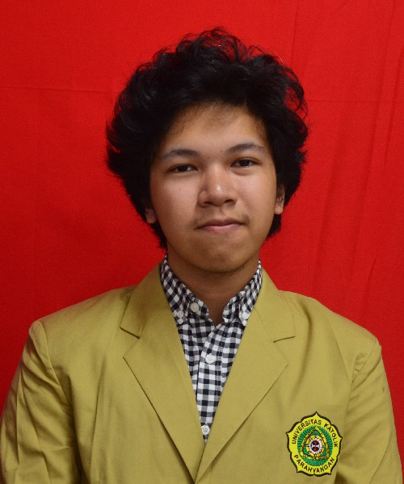

GIOVANNI ANGGASTA
Profil Singkat
Mahasiswa Informatika Universitas Katolik Parahyangan angkatan 2016 yang sedang menyelesaikan sisa akhir studinya. Pada saat ini sedang menyelesaikan skripsinya berbasis SI atau Sistem Informasi.
Selain di Akademik, Giovanni juga aktif pada bidang kemahasiswaan pada tahun ia menjabat menjadi Wakil Ketua Himpunan Program Studi Teknik Informatika (HMPSTIF).
Biodata
Giovanni lahir di tanggal 17 Oktober 1997 di Bandung Medan
Motto Hidup
"May the Force be with you."
Star Wars, 1977